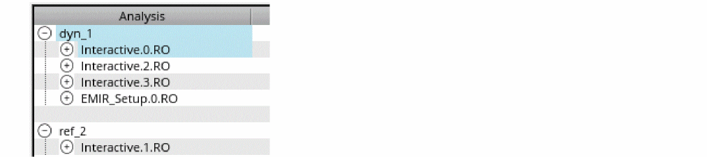
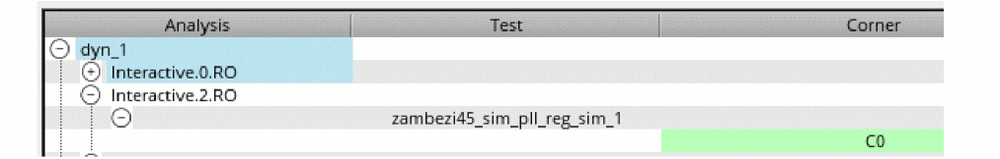
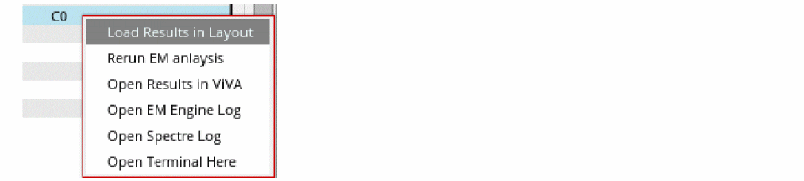

Working with History Items
The Results tab in the Voltus-XFi GUI allows you to preserve the history of simulation results. Using this feature, you can view and load multiple simulation results corresponding to the saved history items. The file naming convention for history items is according to the maestro history name, that is, the default is Interactive for the active setup of the view and user-specified name for the setup state of the view. In the following image, Interactive.0.RO, Interactive.1.RO, Interactive.2.RO, and Interactive.3.RO are names of the history items for the active setup of the view, and EMIR_Setup.0.RO is the name of the history item for the setup state of the view.
To load the simulation result corresponding to a specific history item, do the following:
- On the Voltus-XFi window, choose Results from the task pane.
-
Expand the analysis tree by clicking the plus sign (+) to the left of the analysis you want to load.

-
Click the plus sign (+) to the left of the required history item and test.
Hover your mouse pointer over the name of an analysis to view the analysis type, over the history item to view its timestamp, and over the corner name to view its status (simulation passed/failed), timestamp, and the path to the history directory. -
Right-click the corner name and select Load Results in Layout from the shortcut menu.
The Virtuoso Layout window opens in another tab, with the high-level design summary displayed in Results Browser.
Related Topics
- Visualizing EM-IR Analysis Results using Voltus-XFi Results Browser
- Viewing EM-IR Analysis Reports
- Viewing Waveform Results
Return to top